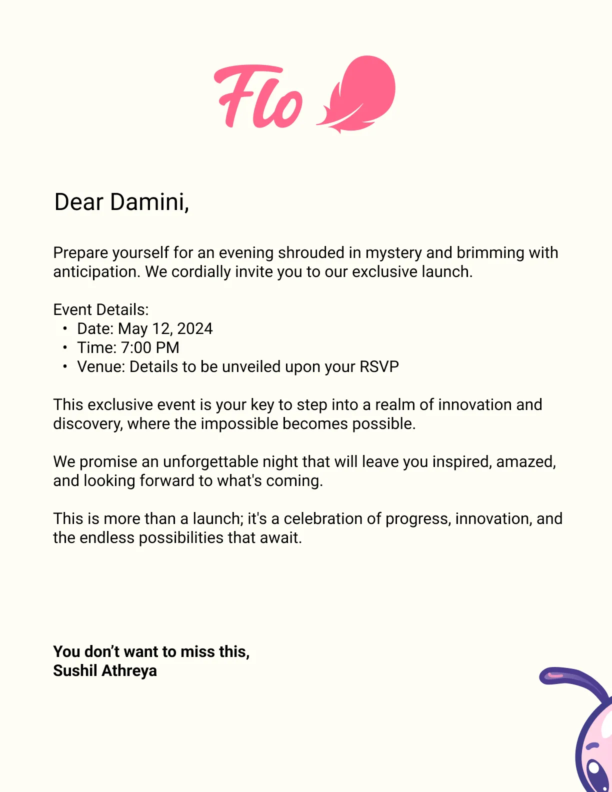
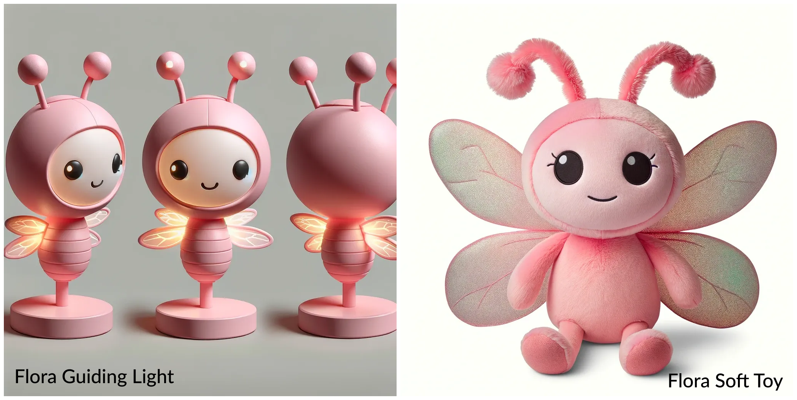
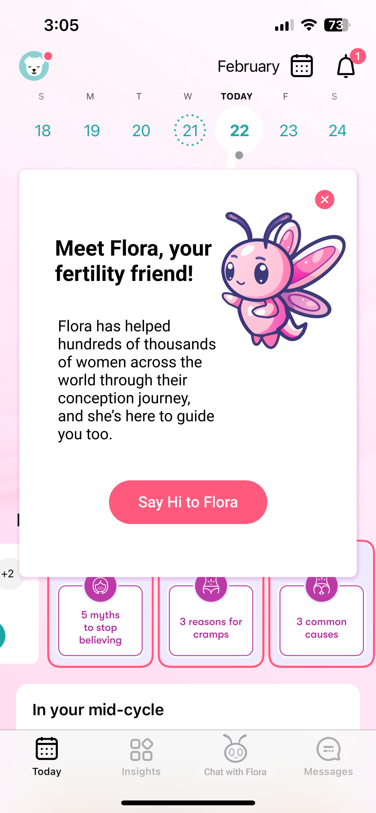
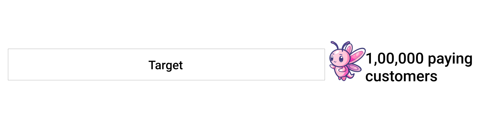

Sushil Athreya


This project was an extensive strategic deepdive into how Flo can acquire 100,000 paying customers in India in 12 months. This is just a summary of the 40,000+ word strategy document that I built along with 6 other teammates in a span of 3 weeks.
This deepdive covers the following:
How do you feel when you see this image?
Let’s zoom out and see how someone who’s trying to conceive feels
Women often don’t feel understood and need a non-judgmental guide through their journey of
womanhood. That’s where Flo comes in.
The journey
Flo was launched globally with an initial release in 2015. It hit the Indian markets on April 12,
2016. In January 2024, Flo had 62 million Monthly Active Users worldwide with an estimated 3.5% of
that in India.
Core value prop
Flo is every woman’s bestie for life. Damini uses Flo’s cycle tracking and information to avoid
embarrassing situations, manage her symptoms, plan her trips, and stay pregnance free. When she’s
ready for it, Flo seamlessly transitions to help her in her journey to conceive and in each step of
her pregnancy adventure
Key Product Insights
❌ Lack of context: The content shown on the app is not specific to the problem that the user is
dealing with. Eg: A lot of users that we spoke to had conditions such as PCOS, but the content on
the app was not targeted to their condition. These women are going to have irregular periods, but
every time the period was irregular, the app prompted them to check if they were pregnant.
✅ Strong community: Flo has a great community and an excellent search feature within the
community

Flora is an immortal firefly who has lived for hundreds of years. While she’s lived for so long, she
never ages and is still young at heart. Throughout her long lifetime, she has traveled across the
world and has seen the joys and struggles of women across places and across eras.
Flora has supported hundreds of thousands of women through their womanhood. From their early years
of menstruation, to dealing with menstrual challenges, to helping them bring new life into this
world, and beyond.
Flora is caring, friendly, non-judgmental, and most important of all extremely knowledgable about
everything related to womanhood. It’s no coincidence that she shares her name with the Roman goddess
of spring and fertility.
Flo is already a woman’s bestie, guiding her through the thick and thin of womanhood. Women face
deeply personal and serious problems that they don’t feel a lot of people in their immediate circle
will relate to. They find it difficult to trust a faceless app.
The mascot will add a face to the brand that gives women someone to relate to when they think of
Flo.
Things that will be positively impacted by a mascot:
We built an in-depth launch strategy + designed Flora’s app interaction for the Capstone. I will just
show you the highlights here:
| Invite to the launch event | Flora merch | Flora your fertility friend |
|---|---|---|
|  |  |  |
Why do women go to gynaecologists?
These could all be target markets for a brand that promotes female health and wellness
We compared 13 different products to understand Flo’s standing in the market. Top competitors have
similar ratings (4.5+) and Flo is up at the top with 4.7 with 10x more reviews.
Here's how Flo stands out
| Goal priority | Goal Type | ICP 1 - Always prepared | ICP 2 - Safe Sex | ICP 3 - Trying to conceive | ICP 4 - Pregnant | ICP 5 - PCOS/PCOD |
|---|---|---|---|---|---|---|
| Primary | Personal | They want to avoid embarrassing social situations, plan their trips, plan their events, and learn more about their bodies. | Women want to remain sexually active while avoiding an unplanned pregnancy at all costs. | Get a better awareness around pregnancy, and insights into information on medication and IVF and other infertility treatments | Track baby’s progress for a better understanding | To understand their body better and get the right direction for the treatment. Also, get support from the community |
| Secondary | Functional | Track periods and log symptoms to check predictions | Track periods to check ovulation and take precautions as to avoid pregnancy. Also act as reminders to take birth control pills | Log the period data so that they can track the ovulation every month without having to remember it/missing a window | Get educated on the various trimesters and join the parent community for guidance and advice | Track irregular periods to understand the cycle better |
| User Segment | Priority | Market Size | % of userbase | Willingness to pay | Frequency of usage | Adoption curve | Distribution potential |
|---|---|---|---|---|---|---|---|
| ICP 1 - Basic Tracking | P5 | ₹8,500 crores | 50 | Low | 2-3 times a month | Low | High |
| ICP 2 - Safe Sex | P4 | ₹800 crores | 5 | Low | 3-4 times a month | Low | High |
| ICP 3 - Trying to Conceive | P2 | ₹2,000 crores | 13 | High | 5-6 times a month | Moderate | Moderate |
| ICP 4 - Pregnant | P3 | ₹900 crores | 5 | High | 8-10 times a month | Moderate | Moderate |
| ICP 5 - Pre-existing issues | P1 | ₹3,000 crores | 18 | High | 5-6 times a month | Low | Moderate |
Based on the above factors, our prioritized ICPs are:
Our goal is to acquire 100,000 paying customers in India in 12 months
Based on our user research and growth modelling, we found that the 2 core levers are:
The full growth model is available here.
What does engagement for Flo look like today?
| User type | Frequency of use | Features used |
|---|---|---|
| Casual | 2-3 times a month | Period tracker |
| Core | 3-5 times a month | Period Tracker, Secret Chat, Symptom Checker |
| Power | 7+ times a month | Period Tracker, Articles, Secret Chats, Partner Sharing |
Engagement framework
| Type of framework | Action | Prioritization | Reasoning |
|---|---|---|---|
| Breadth | Participate actively in the community, logs in symptoms, active user of all quizzes, games and all other campaigns run by Flo | Primary | When users stop associating Flo to just be a period tracking app and use it for other features that will support a women’s health journey, we believe users will come to the app more often and explore all its features in depth |
| Frequency | Use Flo more than 2-3 times a month, and not just once a month of period cycle tracking. | Secondary | This is the current largest pool of users in the app. The goal would be to convert these users to core users by enabling access and awareness of other sub-products and offerings. |
| Depth of engagement | Any one or a combination of these : Read >5 articles on Flo, Reply to >10 community posts a month, Logs symptoms every day | NA |
Want to see more of my work?
Back to Portfolio